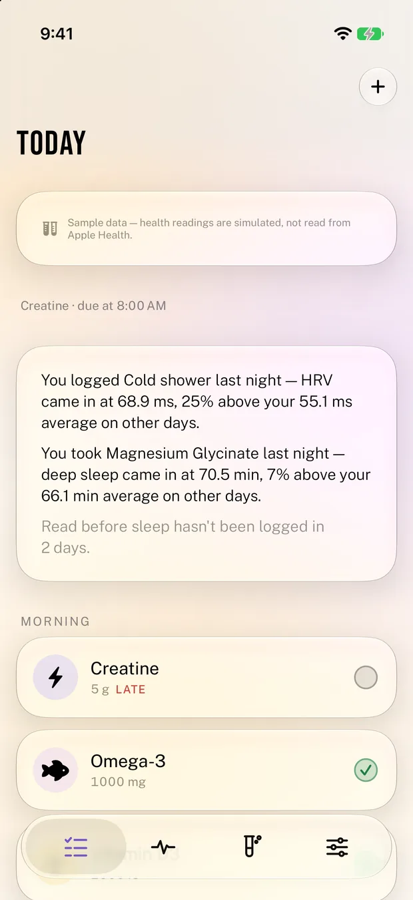

Health & Fitness
Stack
Track your stack. Test what works.
iPhone · iPad · Mac · Watch

The app
Track your stack. Test what works.
A supplement tracker with an honest experiments layer. Tick off what you took, tap a chip for how you felt, then compare any supplement against an Apple Health metric. Magnesium days against deep sleep, for instance.
The experiments engine is honest by construction. It refuses to show a result below seven matched days, leads with effect size rather than a p-value, flags confounders, states its confidence in plain language, and never implies a correlation is a cause.
Features
What it actually does.
Self-experiments against about 50 Health metrics
Minimum sample sizes enforced
A 17-week consistency heatmap
Control Centre button
Privacy
Health data is read on your device, any figures kept are stored on your device, and none of it is uploaded.
StorageOn device
On-device, with opt-in iCloud sync
Apple HealthRead only
HealthKit is read on-device. Daily figures for the habits Health keeps for you are stored on your device so past days can be shown and compared, and a subjective mood rating can optionally be written back to Health. Nothing is uploaded.
AnalyticsNone
No analytics of any kind.
Third partiesNone
No third-party SDKs, trackers or advertising.